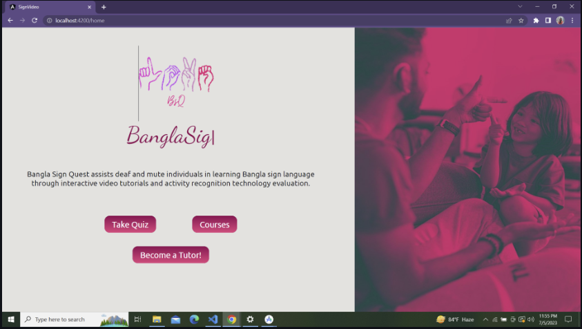

Bangla Sign Language Learning Platform
A comprehensive video-based learning platform designed to make Bangla Sign Language education more accessible and interactive. Teachers can create and manage courses, upload instructional videos, and organize learning materials, while students can study signs through video lessons and a visual dictionary mapping Bangla words to their corresponding signs. The platform incorporates an AI-based sign-evaluation system trained on a custom dataset of recorded Bangla Sign Language videos. Students can demonstrate a sign using their camera and receive feedback on how closely it matches the reference sign. It also supports interactive quizzes in which a Bangla word is displayed and the student must perform the corresponding sign; the system analyzes the gesture and determines whether it is correct.
Second Place · National Project Showcasing Competition
Technical skills: Computer Vision, FastAPI, Angular, SQLite